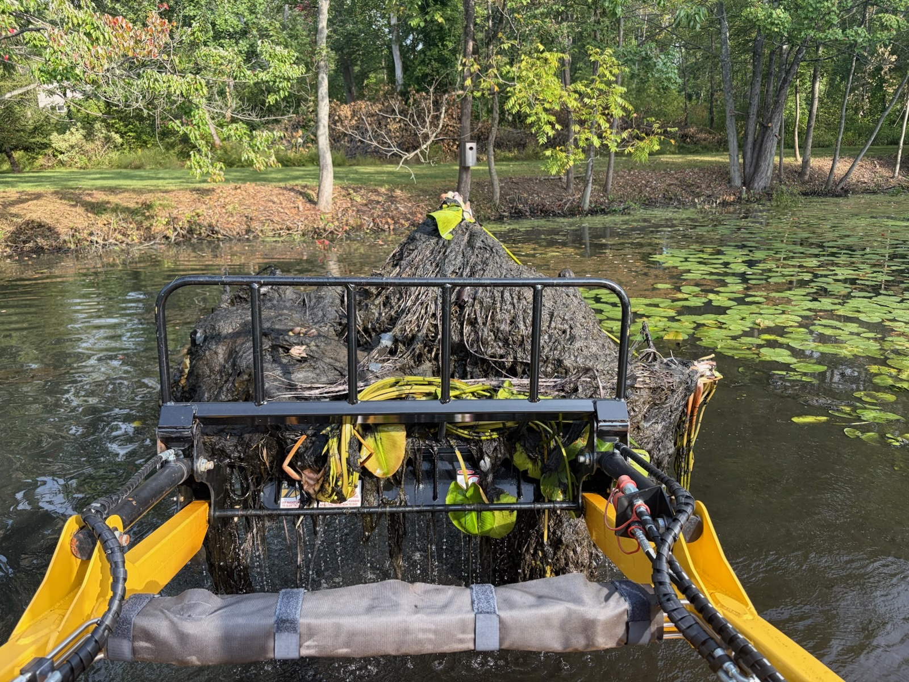
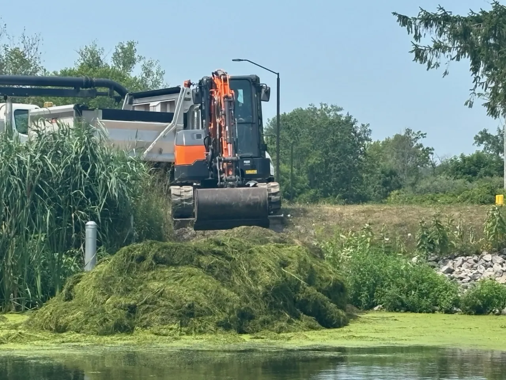
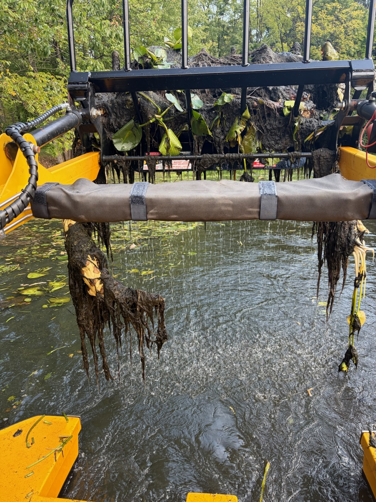

Home / Services / Muck removal
Lake Muck Removal and Pond Muck Reduction
Remove accumulated organic sediment from problem areas in lakes and ponds. Our mechanical muck removal service targets decomposed vegetation, leaves, algae, and other organic material that has settled on the bottom.
- Physical removal of existing muck
- Targeted lake and pond treatment
- Sustainable removal without chemical muck treatments
What Muck Is
Organic Sediment Removal for Lakes and Ponds
Lake and pond muck forms as aquatic vegetation, algae, leaves, and other biomass settle and decompose on the bottom. Over time, this soft organic sediment can reduce water depth, create unstable bottom conditions, and restrict access around docks, shorelines, and swimming areas.
This service goes beyond surface weed removal. We physically extract accumulated organic sediment from targeted areas and can pair the work with aquatic vegetation and debris removal to address both existing buildup and the material contributing to future accumulation.
-
01
Restore Shallow Areas
Removing accumulated sediment can recover usable depth around docks, shorelines, swimming areas, and other priority sections.
-
02
Improve Bottom Conditions
Targeted organic sediment removal can reduce soft, unstable muck in frequently used areas.
-
03
Remove Decaying Material
Extract decomposed vegetation, algae, leaves, and other organic matter that has collected on the bottom.
-
04
Address Future Buildup
Combine muck reduction with aquatic vegetation and debris removal to reduce additional organic material entering the pond or lake bottom.
Where We Work
Targeted Lake and Pond Muck Reduction Service
Muck does not accumulate evenly across an entire waterbody. Wind, currents, surrounding trees, aquatic vegetation, and shoreline conditions often concentrate organic material into coves, dock areas, shallow corners, and protected shorelines in both lakes and ponds.
We focus our muck removal and reduction services on specific areas where bottom sediment creates the greatest disruption, including:
- Docks and boat access points
- Swimming and wading areas
- Shallow coves
- Waterfront shorelines
- Areas affected by decomposing vegetation
- Locations where leaves and organic debris collect
Our service is suitable for private, farm, community, commercial, and recreational ponds, as well as targeted lake shorelines.
The Process
How Mechanical Muck Removal Works
-

Assess the Buildup
We review the affected area, sediment conditions, water depth, access, and the lake or pond's use.
-

Define the Removal Area
The project focuses on specific locations such as docks, swimming areas, shorelines, coves, and shallow pond sections.
-
Remove the Sediment
Existing organic sediment is mechanically lifted and removed from the bottom.
-

Manage the Removed Material
The collected material is transferred out of the water and managed in accordance with the property conditions and the agreed project scope.
Mechanical, Not Chemical
Sustainable Physical Removal Without Chemical Treatments
Chemical and biological muck treatments are intended to accelerate decomposition, but they do not physically extract the accumulated material from the waterbody.
Mechanical lake muck removal lifts the sediment from the bottom and removes it from the treated area.

-
01
Existing Sediment is Physically Removed
-
02
Priority Areas Can Be Targeted
-
03
No Chemical Muck Treatment Applied
-
04
Suitable for Lakes and Ponds
-
05
Can Be Combined with Vegetation Removal
Questions
Muck Removal Questions
What is lake or pond muck?
Muck is soft organic sediment formed when vegetation, algae, leaves, and other natural materials settle and decompose on the bottom.
Do you physically remove the muck?
Yes. Existing organic sediment is mechanically lifted and removed from the selected treatment area.
Is muck removal the same as weed removal?
No. Weed removal targets living aquatic vegetation. Muck removal addresses organic sediment that has already accumulated on the bottom. The services can be combined when both problems are present.
Do you use chemical muck treatments?
No. We physically remove organic sediment using mechanical equipment.
Free Initial Assessment
Find Out What It Takes to Remove the Muck
Send us photos and basic information about your lake or pond. We will review the affected area, discuss the removal options, and provide a no-obligation estimate.